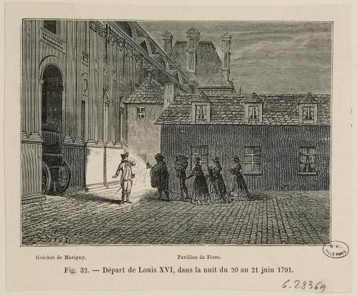
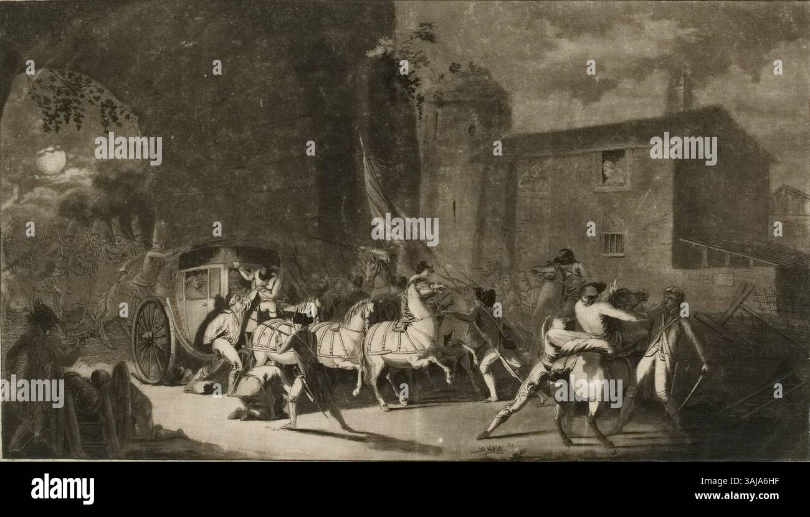

La Fuite de Varennes
Dont vous êtes le héros — Louis XVI, Juin 1791
Vous êtes Louis XVI, Roi de France. Nous sommes le 20 juin 1791. Cette nuit, vous tentez de fuir Paris avec votre famille royale pour atteindre la forteresse de Montmédy. Le cortège royal quitte Paris discrètement — mais la ville de Varennes vous attend.
Système de points

Le Départ de Paris
La nuit est tombée sur Paris. Dans les couloirs sombres du palais des Tuileries, vous rassemblez votre famille en silence. Marie-Antoinette serre contre elle le petit Dauphin endormi. Madame Élisabeth, votre sœur, prie à voix basse.
Le plan a été préparé par le comte Axel de Fersen, fidèle parmi les fidèles. Une berline vous attend près du guichet de Marigny. Mais le danger est immense : La Fayette a posté des gardes nationaux partout.
Fersen vous murmure : « Sire, il est temps. Deux options s'offrent à vous. »
Comment quittez-vous les Tuileries ?
Le Passage Secret
Vous empruntez un étroit passage souterrain qui mène sous les jardins. L'air est humide, les murs suintent. La reine retient un cri quand une araignée tombe sur son épaule.
Après vingt longues minutes, vous émergez près du guichet de Marigny. La berline de Fersen est là, dissimulée sous les arbres.
Fersen vous prévient : « Sire, la berline est immense — elle attirera l'attention. Je peux trouver deux voitures plus petites, mais cela prendra une heure. »
Quel véhicule choisissez-vous ?
La Sortie des Audacieux
Vous enfilez les vêtements d'un valet. Marie-Antoinette porte la tenue sombre d'une gouvernante. Les enfants sont emmitouflés dans des couvertures ordinaires.
Un garde national vous dévisage. « Hé ! Toi ! » Vous vous figez. Le temps s'arrête. Puis : « Tu as oublié ta lanterne, imbécile. »
La berline attend au coin. Fersen vous presse : « Vite, Sire. L'aube ne nous attendra pas. »
La berline est prête — que décidez-vous ?
Le Voyage dans la Nuit
Le cortège s'élance dans la nuit noire. Les routes de France défilent sous les roues. À Bondy, on change les chevaux. À Meaux, la reine s'endort enfin.
À Sainte-Menehould, le maître de poste Jean-Baptiste Drouet compare votre visage à l'assignat qu'il tient en main. Ses yeux s'écarquillent. Il sait.
Drouet enfourche un cheval et galope vers Varennes. La course contre la montre commence.
On vous a reconnu — que faites-vous ?
Les Chemins de Traverse
La berline s'enfonce dans des sentiers boueux. Les branches griffent les parois du carrosse. Soudain, une roue se brise dans une ornière !
Pendant ce temps, Drouet file vers Varennes par la route principale. Vous avez gagné de la discrétion, mais perdu un temps précieux.
La roue réparée, vous arrivez aux abords de Varennes. Il est presque minuit.
Comment entrez-vous dans Varennes ?

La Course vers Varennes
Le cocher fouette les chevaux. La berline bondit sur la route. Les chevaux sont épuisés.
Varennes apparaît. Mais un barrage de charrettes bloque le pont ! Drouet vous a devancé. Des lumières s'allument aux fenêtres.
Le pont est barricadé — que faites-vous ?
Face au Peuple
Le tocsin sonne ! Les habitants sortent armés de fourches et de piques. Le procureur Jean-Baptiste Sauce vous demande vos papiers.
Un vieil homme lance : « C'est le roi ! J'ai servi à Versailles ! » Sauce vous regarde droit dans les yeux.
Que répondez-vous ?

Le Forçage du Passage
Le pont est barricadé ! Vos gardes tirent leurs épées. La foule recule un instant.
Sauce arrive : « Au nom de la Nation, arrêtez-vous ! » Des fusils pointent vers la berline. Marie-Antoinette pousse un cri.
Que leur ordonnez-vous ?

Le Mensonge du Roi
Vous maintenez votre couverture. Sauce hésite. Mais un ancien soldat désigne un assignat : « C'est le même visage ! »
On vous conduit dans la maison de Sauce, transformée en prison improvisée pour un roi.
Comment réagissez-vous ?
Le Roi se Dévoile
« Mes amis, oui, je suis votre roi. » Un silence de mort. Des hommes retirent leur chapeau. Mais d'autres serrent leurs armes plus fort.
Sauce vous invite chez lui : « Sire, les enfants ont besoin de repos. »
Que faites-vous ?
La Sagesse du Roi
« Rangez vos armes. Je ne veux pas qu'une seule goutte de sang français coule. »
La foule, stupéfaite, baisse ses armes. Sauce vous reconnaît. « Sire… venez chez moi. »
Que faites-vous ?
La Charge Désespérée
Vos gardes chargent ! Des coups de feu éclatent. Un garde tombe. La berline reste coincée. En quelques minutes, vous êtes encerclé.
Dernier choix
La Maison Sauce
Madame Sauce apporte du lait pour les enfants. La reine murmure : « Mon Dieu, en sommes-nous réduits à cela ? »
Deux émissaires de l'Assemblée arrivent à l'aube. Mais les hussards de Bouillé approchent aussi. C'est une course.
L'aube se lève — une dernière chance
L'Or du Roi
Sauce regarde l'or, puis vous. Ses mains tremblent. Sa femme : « Prends-le ! »
Mais il secoue la tête : « Si je vous laisse partir, c'est moi qu'on pendra. » L'or n'achète pas la liberté.
Que reste-t-il ?
Le Discours du Roi
« Peuple de Varennes ! Je ne fuis pas mon peuple — je fuis ceux qui veulent détruire la France ! »
Des voix crient « Vive le Roi ! », d'autres « Vive la Nation ! ». La foule est divisée.
Votre discours a semé le doute

Le Roi Prisonnier
Trois jours de route sous la chaleur. Personne n'ôte son chapeau. Marie-Antoinette découvre une mèche de cheveux blancs.
Le Dauphin demande : « Papa, pourquoi les gens ne nous aiment plus ? »
⛓️ Le Roi Prisonnier
La confiance est brisée. Mais votre dignité vous vaut le respect — même parmi vos ennemis.

Le Dernier Espoir
Quarante hussards arrivent ! « Sire, donnez l'ordre ! »
Mais dehors, des milliers encerclent la maison. Un canon pointe sur la porte. Si les hussards chargent, ce sera un massacre.
L'ultime décision
L'Évasion Réussie
🏇 L'Évasion Réussie !
Vous êtes libre. Mais la France s'embrase derrière vous. L'Histoire vous jugera comme le roi qui a abandonné son peuple.
Le Retour dans le Sang
⛓️ Le Retour dans le Sang
La violence scelle votre destin. Le 21 janvier 1793, vous montez à l'échafaud.
La Nuit de Sang
💀 La Nuit de Sang
Ni courage véritable, ni humanité. Seulement la peur d'un homme acculé.